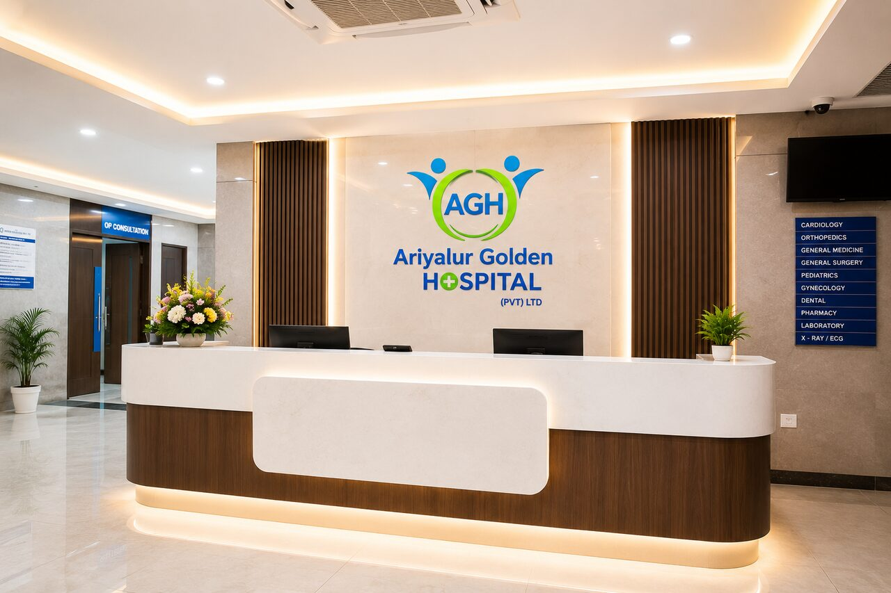
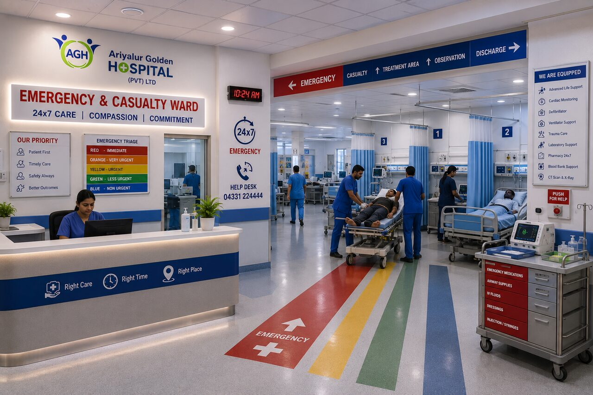
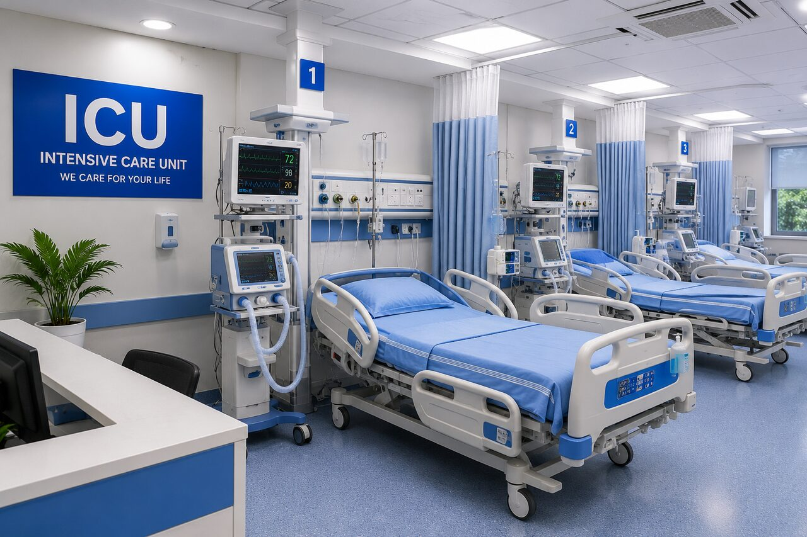
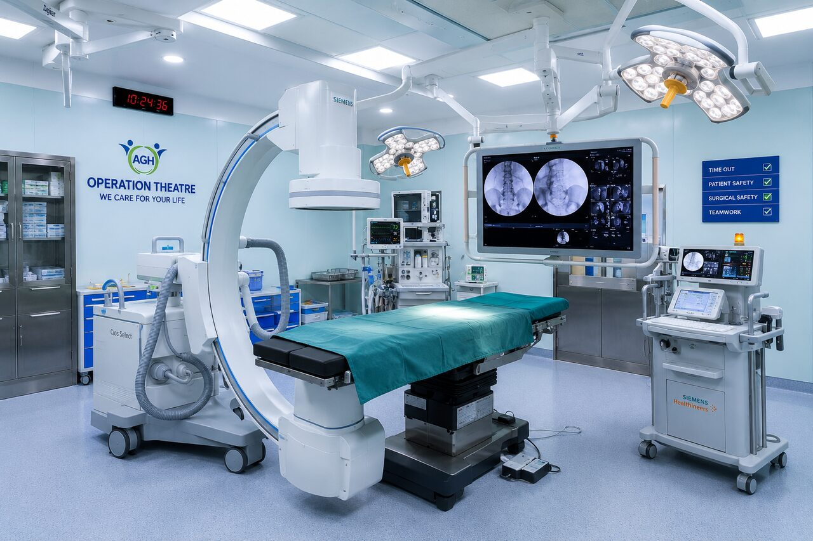
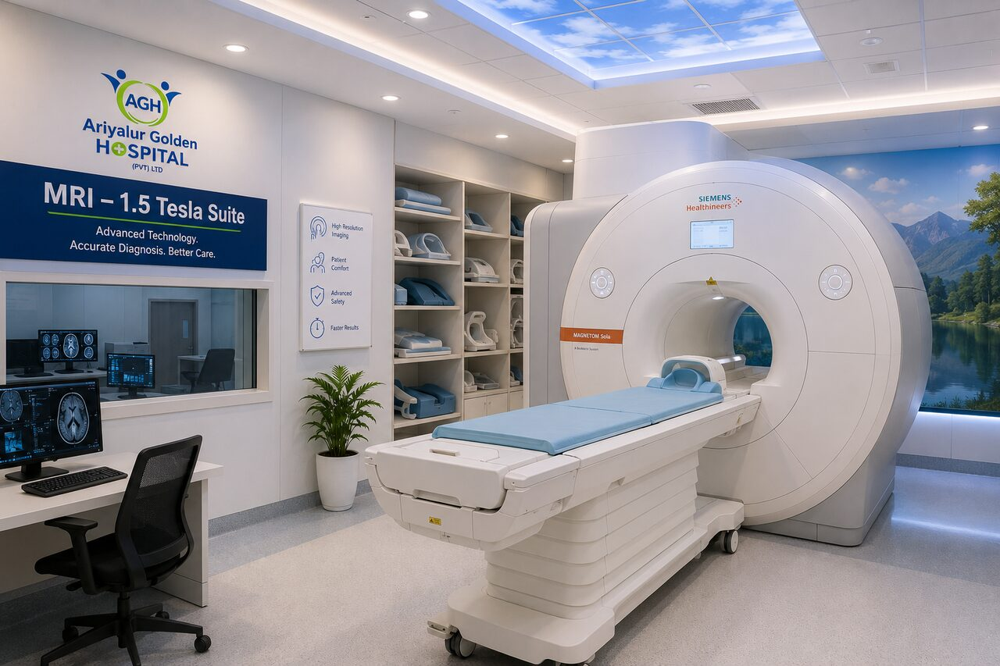
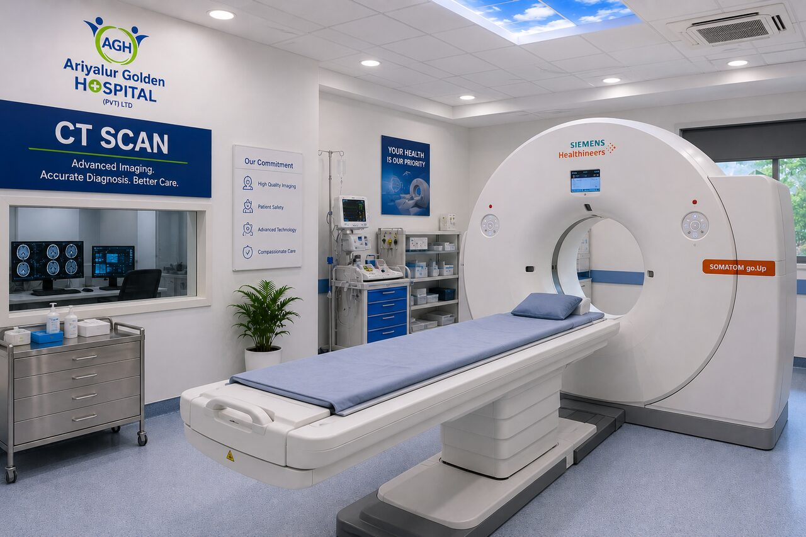
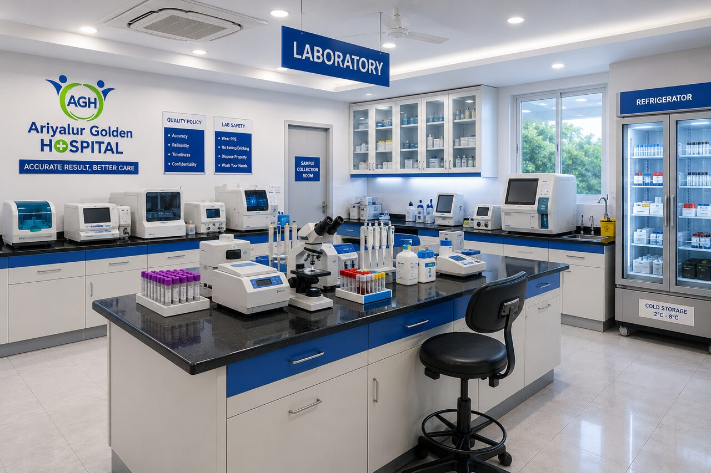
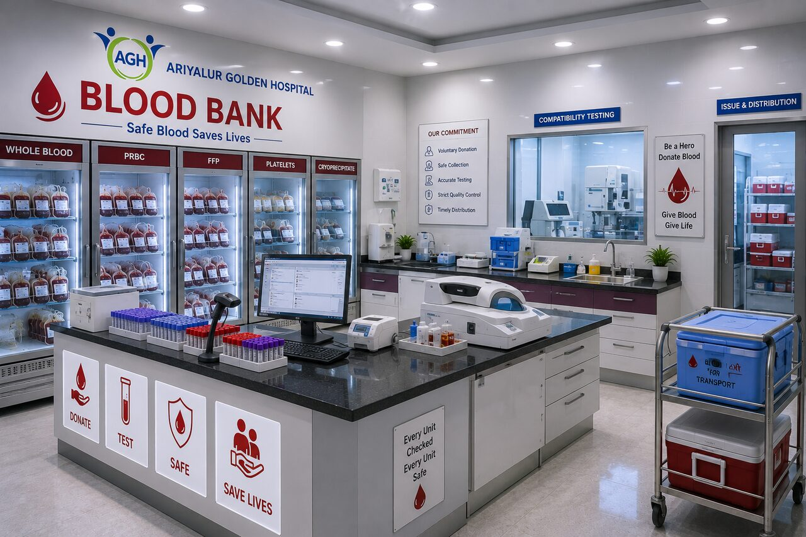

Inside the Hospital
Gallery
Explore photographs of the hospital exterior and selected patient-care, diagnostic and support areas. Select a photograph to view a larger version.
About these images: the exterior photograph was taken at Ariyalur Golden Hospital. The interior images are illustrative representations of hospital facilities — not documentary photographs of active patient care — and will be replaced with approved photographs of the hospital. No patient information is shown.
Hospital exterior and reception


Patient-care areas



Diagnostics and support services




Access and image use
Clinical areas are restricted. Photographs are provided for information; public tours are not available unless approved in advance. Images are published with applicable permissions and show no patient information. Gallery last reviewed: August 2026.